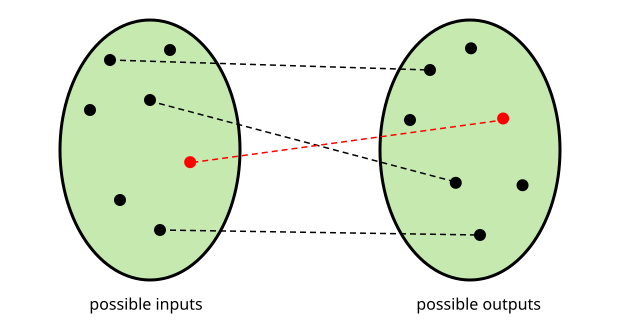
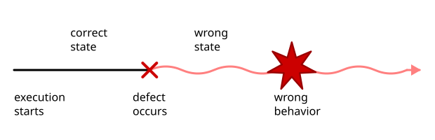

three techniques to fix bugs in Python code

the amount of possible inputs and outputs is huge. It is practically impossible to verify that all pairs are correct.

Defects change the internal state of the program. They may become apparent to the user much later.
Code in debugging/
inspect the internal state with:
from pprint import pprint
pprint(field)
Add the command to make_move() in app.py.
breakpoint() to your code| command | explanation |
|---|---|
| l | list code lines |
| n | execute next line |
| s | step into function |
| c | continue execution |
| q | quit |
Add another test in test_shogi.py
that tests the buggy situations before fixing the bug.
practical hints for getting started
Code in type_annotation/
ty is a fast type checker written in Rust.
uv add ty
uv run ty check .
or
pip install ty
ty check .
some examples:
running: bool = True
piece: str = "lion"
player: int|None = 1
Specify what tuples, lists and dictionaries should contain:
position: tuple[int, int]
names: list[str]
field: list[list[tuple[str, int|None]]]
Literals protect you from typos!
from typing import Literal
Player = Literal[1, -1]
Piece = Literal["lion", "giraffe", "elephant", "chick"]
Enhance readability with more precise types:
Position = tuple[int, int]
position: Position = (1, 2)
Field = list[list[tuple[Piece, Player|None]]]
Annotating function parameters and return types is a great starting point:
def add(a: int, b: int) -> int:
Annotating function parameters and return types:
def execute_move(field: Field,
player: Player,
move: tuple[Position, Position]
) -> tuple[Field, Player, str]:
Some types need to be imported from the typing module:
from typing import (
Any, # placeholder that matches everything
Callable, # function
Sequence, # lists, generators, files etc.
cast # function to convert type annotations (ugly)
)
Sometimes types are ugly to resolve and you may not want to check them:
fruit: str = "apple"
fruit = 42 # type: ignore
practical exercise
Code in type_annotation/
Take a look at shogi.py
What do you not like about it?
Small refactorings should be done within a few minutes
Small refactorings should be doable within a few minutes
Run the tests with
uv run pytest
or
pip install pytest
pytest
Replace the multiple if block in execute_move() by a more data structure that contains moves for each piece.